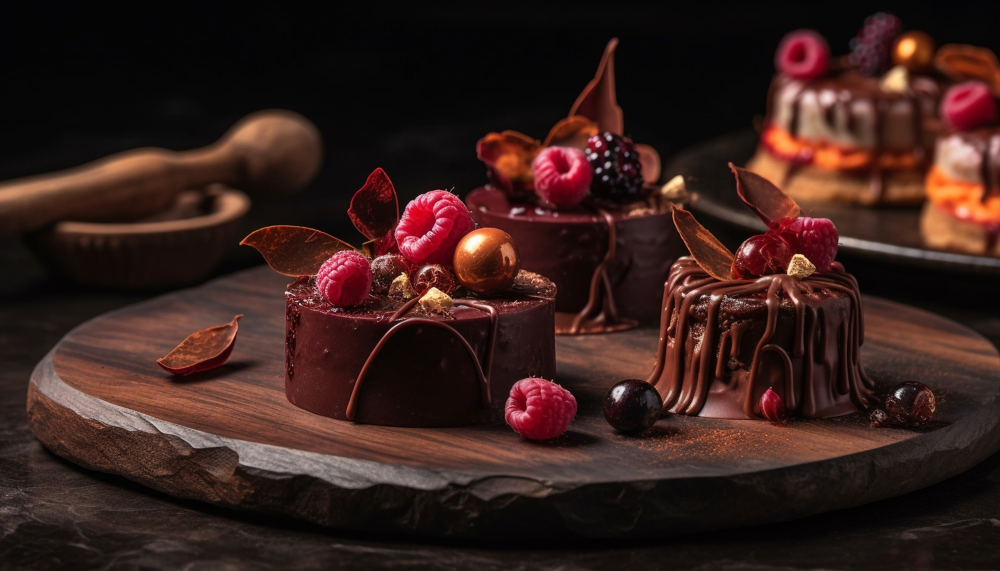
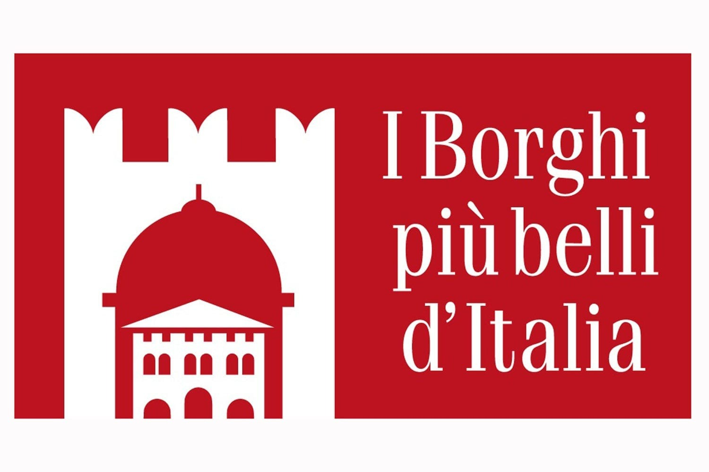
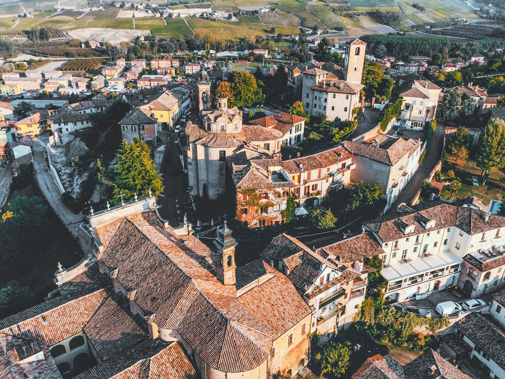
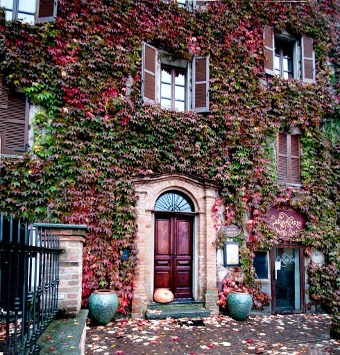
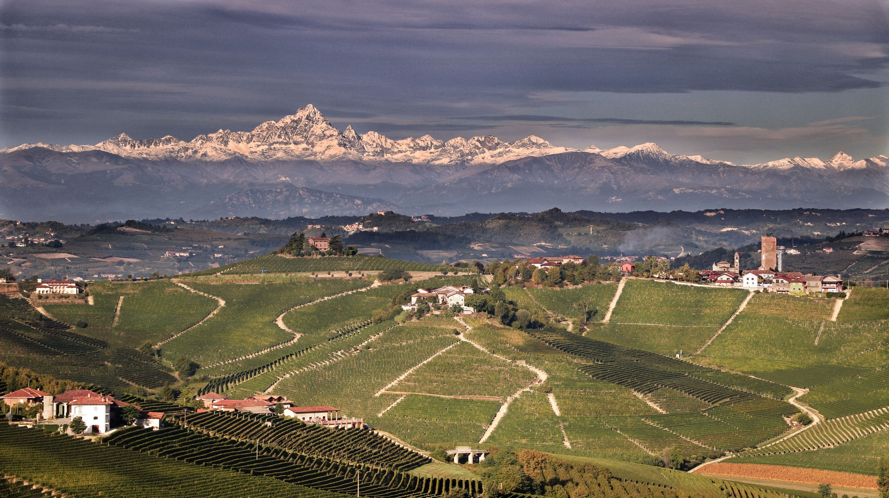
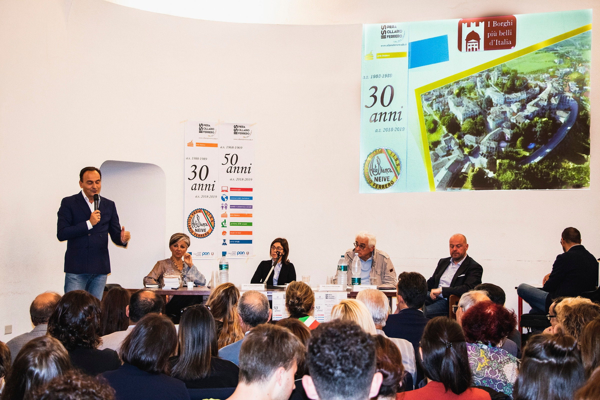
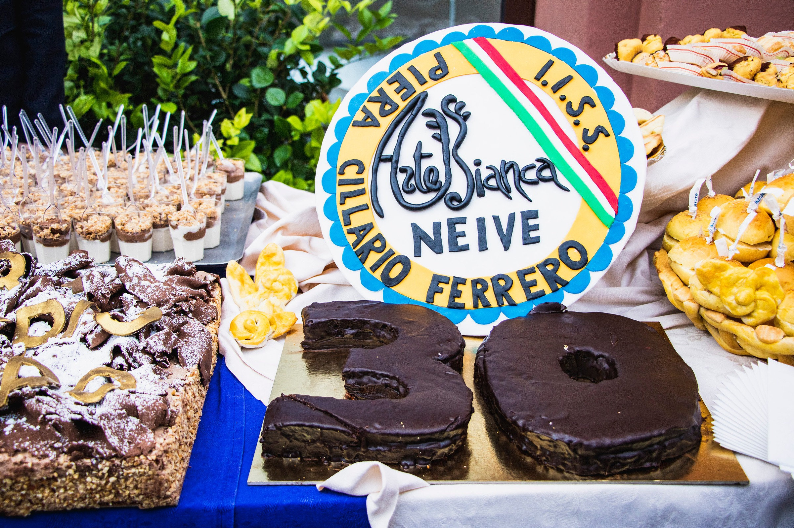
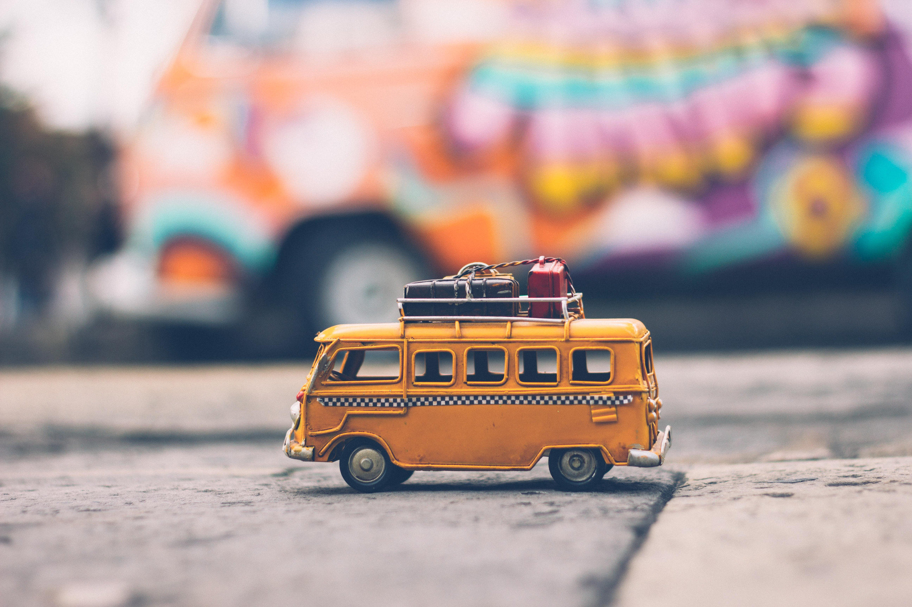
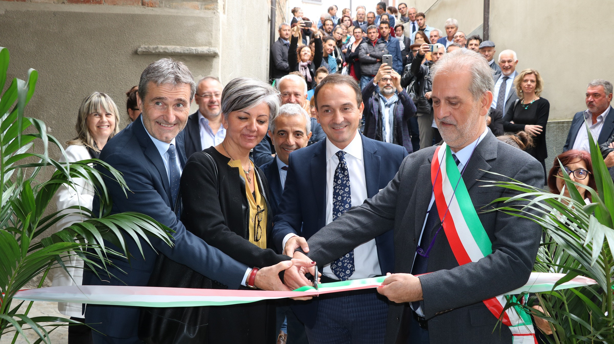
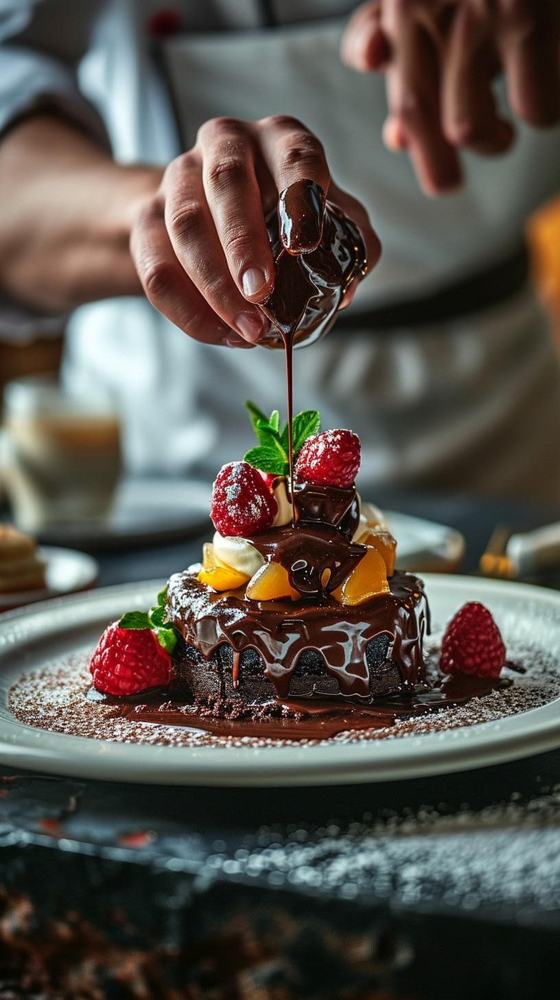

- Istituto professionale statale -

Entra nei laboratori, vivi la nostra scuola

I Borghi più belli d’Italia
L’Arte Bianca è una delle tre sedi dell’Istituto di Istruzione Secondaria Superiore “Piera Cillario Ferrero” e sorge nel cuore dello splendido borgo di Neive, situato nelle Langhe Occidentali fra Barbaresco e Castagnole delle Lanze, a poco più di 10 km da Alba.
Il piccolo borgo ha mantenuto l’antico impianto medievale con caratteristiche stradine in pietra e i palazzi color del cotto che, con i tetti rossi, richiamano i colori delle vigne d’autunno, quando le morbide colline delle Langhe si apprestano a secernere il loro frutto più prezioso.
Oggi Neive è inserita nel club dei Borghi più belli d’Italia.



Una storia lunga più di 30 anni
L’Arte Bianca di Neive è un Istituto Professionale Statale del settore “Servizi per l’enogastronomia e l’ospitalità alberghiera - Pasticceria e Arte Bianca”. Nasce nel settembre 1988 come distaccamento dell'Arte Bianca di Torino (“J.B. Beccari”) grazie all’intuizione di don Giuseppe Cogno, parroco di Neive. L’Istituto, dall’a.s. 2000/2001, è sede associata dell’I.I.S.S. “Piera Cillario Ferrero” di Alba.
L’Arte Bianca ha recentemente festeggiato 30 anni di storia, insieme alla festa per i 50 anni dell’Istituto P. Cillario Ferrero.
La scuola, frequentata da più di 400 alunni (20 classi), ha mantenuto negli anni la sua specificità e ha sviluppato nel tempo rilevanti competenze nella formazione degli addetti alla lavorazione nel settore dolciario, sia artigianale (pasticcerie, panetterie, ristoranti, alberghi, villaggi turistici…) sia industriale (in particolare l’azienda Ferrero).


Indirizzo «Enogastronomia e ospitalità alberghiera»
Arte Bianca e pasticceria
Al termine del terzo anno: QUALIFICA REGIONALE in
Operatore delle produzioni alimentari - lavorazione e produzione di pasticceria, pasta e prodotti da forno
Al termine del quinto anno: DIPLOMA DI ISTRUZIONE SECONDARIA SUPERIORE
| MATERIE | anno 1° | anno 2° | anno 3° | anno 4° | anno 5° |
|---|---|---|---|---|---|
| LINGUA E LETTERATURA ITALIANA | 4 | 4 | 4 | 4 | 4 |
| LINGUA INGLESE | 3 | 3 | 3 | 3 | 3 |
| STORIA e GEOGRAFIA | 2 | 2 | 2 | 2 | 2 |
| MATEMATICA | 4 | 4 | 3 | 3 | 3 |
| DIRITTO ED ECONOMIA | 2 | 2 | - | - | - |
| TIC | 2* | 2* | - | - | - |
| SCIENZE MOTORIE E SPORTIVE | 2 | 2 | 2 | 2 | 2 |
| R.C. O ATTIVITÀ ALTERNATIVE | 1 | 1 | 1 | 1 | 1 |
| SCIENZE INTEGRATE (CHIMICA) | 2* | 2* | - | - | - |
| SCIENZA DEGLI ALIMENTI | 2* | 2* | - | - | - |
| SECONDA LINGUA STR. FRANCESE | 2 | 2 | 3 | 3 | 3 |
| LAB. DI SERVIZI ENOGASTRONOMICI - PASTICCERIA | 4** | 4** | 7 | 5 | 5 |
| LAB. DI SERVIZI ENOGASTRONOMICI - SALA E VENDITE | 4** | 4** | 2* | 2 | 2 |
| LAB. DI SERVIZI DI ACCOGLIENZA TURISTICA | 2 | 2 | |||
| SCIENZA E CULTURA DELL’ALIMENTAZIONE | - | - | 3 | 3* | 3 |
| DIRITTO E TECNICHE AMMINISTRATIVE | - | - | 3 | 2 | 2 |
| ANALISI E CONTROLLI CHIMICI | - | - | 1 | 2* | 2 |
| TOTALE | 32 | 32 | 32 | 32 | 32 |
*compresenze con docenti di laboratorio
**la classe viene divisa in due squadre
La nuova filiera tecnologico-professionale
Tradizione Innovazione Artigianalità
È la rimodulazione del programma quinquennale in 4 anni.
Un percorso progettato per l'inserimento rapido ed efficace nel mondo del lavoro.
Al termine del percorso quadriennale hai la massima libertà di scelta:
da lunedì a venerdì
08:10 - 13:30
UN RIENTRO POMERIDIANO OGNI SETTIMANA FINO ALLE 16:00

Clicca qui per visualizzare gli orari della linea FS45
- Da Alba: treno delle ore 7:48 (+ servizio navetta dalla stazione dei treni di Neive alla scuola), anche per chi arriva al terminal dei bus di Alba dalle varie tratte (linea 120, linea 172, linea 108…). Per il ritorno, treno delle ore 13:40.
- Da Alba: bus delle 8:03 con fermata a Neive Rondò in partenza dalla stazione dei treni, per chi utilizza il servizio ferroviario Cavallermaggiore - Bra e per chi arriva al terminal dei bus di Alba con la linea 14 GTT. Per il ritorno, treno delle ore 13:40.
- Da Asti: bus delle 7:25 con fermata a Neive Rondò. Per il ritorno, bus delle 13:26 da Neive Rondò.
- Pullman (Giachino) Villanova - San Damiano - Baraccone (Via Priocca e Via Statale). Alle ore 7.55 Pullman per Neive Rondò.
- Pullman (Geloso) Canelli - Boglietto - Neive Rondò.
- Pullman (Geloso) S. Stefano - Boglietto - Neive Rondò.
- Novità per rientro pomeridiano: Pullman (Geloso) Castagnole - Boglietto - S. Stefano B. - Canelli - Calamandrana - Nizza M.to.
- Pullman (Fogliati) Castiglione Tinella - Neive Rondò.

L'Arte Bianca è dotata di 3 laboratori di pasticceria e 1 laboratorio chimico-biologico.
Nel 2018 è stato inaugurato il nuovo laboratorio di pasticceria 3, in occasione dell'inaugurazione dell'edificio del distaccamento e nel 2024 è stato completamente ristrutturato il laboratorio 1.
Il 7 giugno 2023 è stato inaugurato il bar didattico "Social corner".
Il cortile panoramico gode di una vista unica sul paesaggio delle Langhe ed è lo spazio ideale per apericena a tema didattico organizzati dagli insegnanti e dagli allievi della scuola.
L'Aula Magna è il luogo di incontro privilegiato per riunioni e seminari formativi.
Il palazzo Mostre e Congressi di Alba ospita ogni anno il nostro spazio per presentare la scuola durante il Salone dell'Orientamento. La Sala Ordet di Alba è teatro delle tradizionali feste di Natale e di fine anno scolastico mentre il Centro Sportivo R. Ceretto di Castagnole delle Lanze accoglie i tradizionali tornei sportivi a classi con cui si celebra l'inizio delle vacanze estive.

Sede dell'IISS Piera Cillario Ferrero tel: 0173/441944 / Indirizzo: Via Balbo, 8 - Alba
Sede associata di Neive tel: 0173/67168 / Indirizzo: Via Rocca, 10
Sito istituzionale www.cillarioferrero.edu.it
E-mail: artebiancaneive@cillarioferrero.it